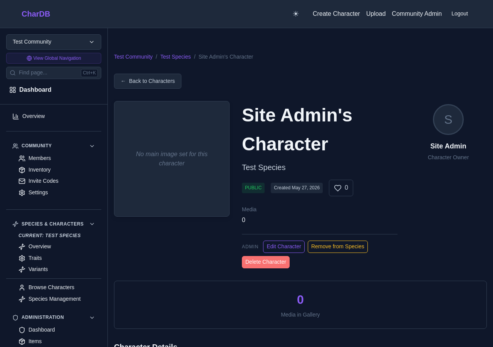
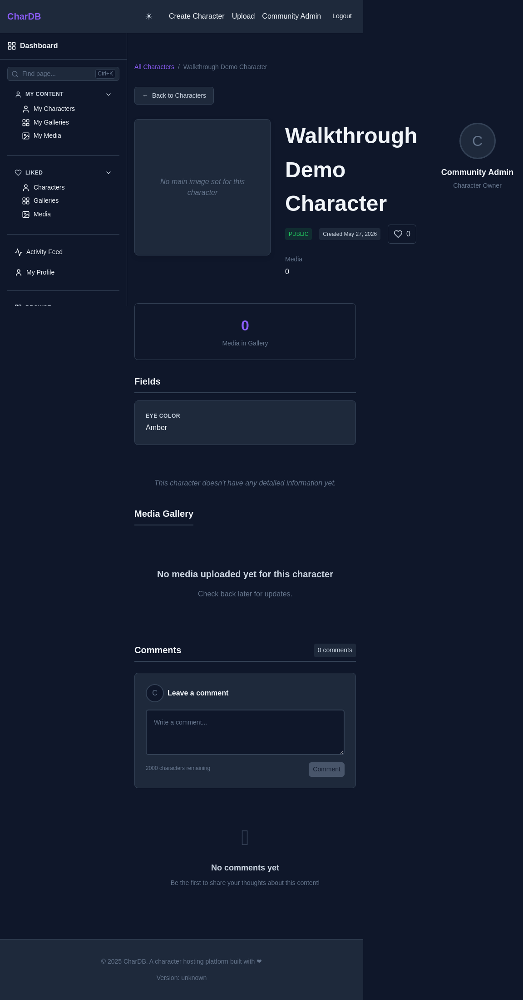
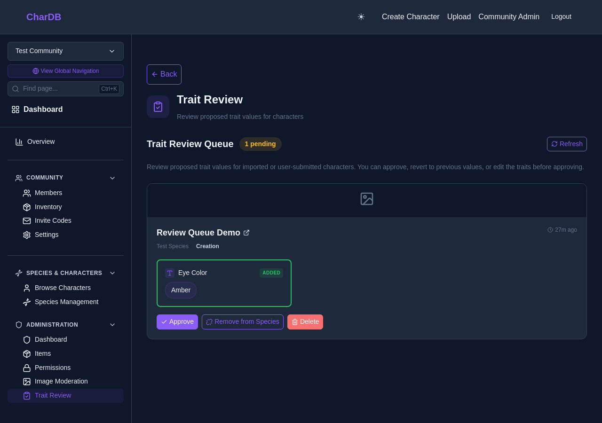

A walkthrough of the community admin tools for managing characters
Community admins and moderators now have two new character management tools: Delete Character and Remove from Species. These actions are available directly on the character page and, for efficiency, on every card in the Trait Review Queue.
Soft-deletes the character. Reversible by a site admin.
Detaches the character from its species, preserving trait data as custom fields.
Requires the canDeleteCharacter role permission or global admin.
Both actions are available inline on Trait Review cards.
When viewing a character that belongs to your community, three action buttons appear in the top-right of the character card — provided you have the canDeleteCharacter permission (or are a global site admin):

Clicking Delete Character shows a confirmation dialog describing what will happen:
deletedAt timestamp. Use this action for
characters that violate community rules or are otherwise no longer
appropriate.
A separate Purge mutation is available to site admins only via the GraphQL API for hard (permanent) deletion when needed.
Clicking Remove from Species shows a confirmation dialog before proceeding. The operation:

Both actions are also available directly on each card in the Trait Review Queue. This lets moderators handle problematic submissions without leaving the queue — approve legitimate traits, remove a character from the species if the traits are incorrect, or delete the character if it violates community rules.

Both actions are gated by the canDeleteCharacter
permission on a community role. To grant it:
Members with that role will immediately see the action buttons on character pages and in the trait review queue.
canDeleteCharacter by default. Moderator and Member
roles do not.